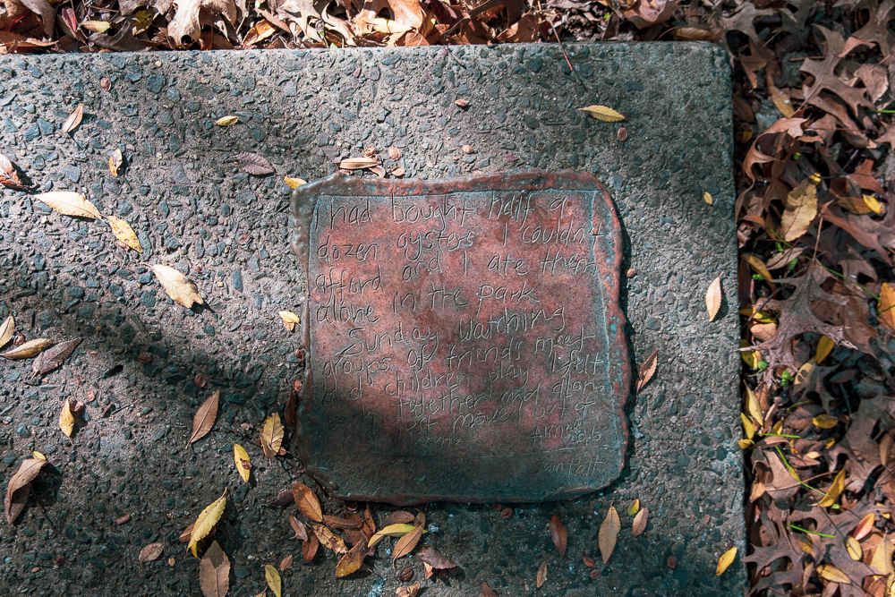
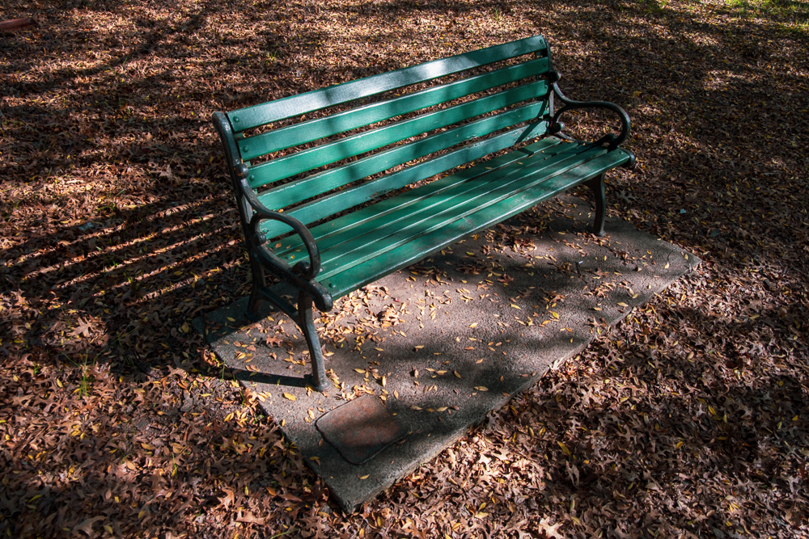
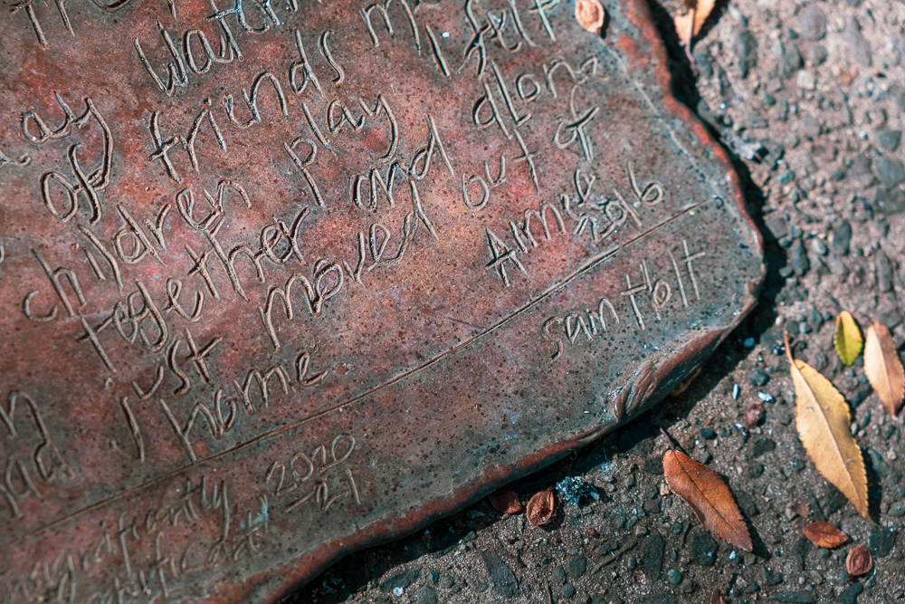

Insignificantly Significant (2020)
A handwritten memory of mine was memorialised on a bronze plaque in Enmore Park, Sydney, as part of Sam Holt's 2020 Insignificantly Significant public art project. The plaque is fixed to a concrete slab beside the bench where I used to sit.
The memory is from 2016: "I'd bought half a dozen oysters I couldn't afford and I ate them alone in the park. Sunday. Watching groups of friends meet and children play I felt both together and alone. I had just moved out of home."


